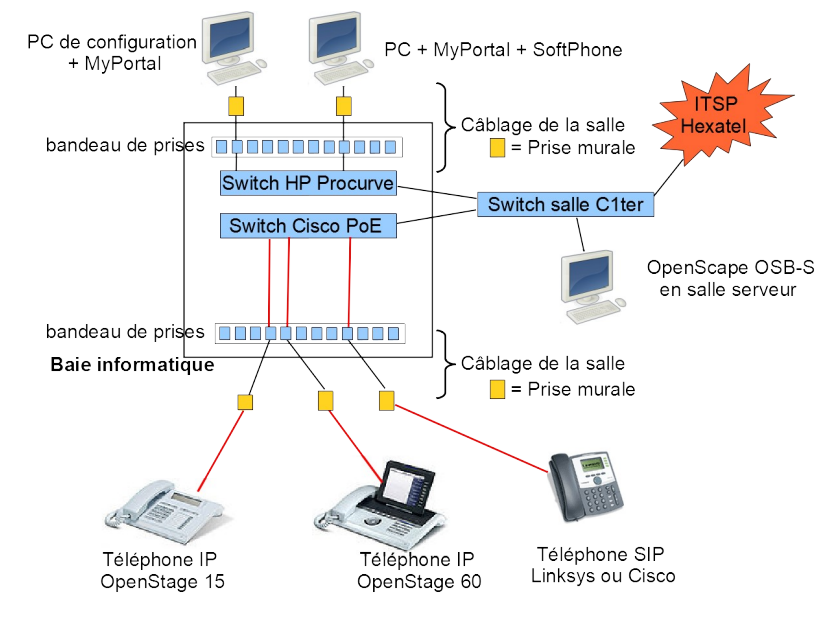

Projet téléphonie
J'ai réalisé ce projet visant à mettre en place et configurer un callserver ainsi que des téléphones IP et des softphones. J'ai de plus pu experimente avec différents services de téléphonies.
Il a été réalisé par deux et supérvisé par un professeur sur 9 heures.
Lors de ce projet, les tâches principales était la configuration d'un callserver ainsi que de téléphones IP. La mise en place d'un trunk SIP a aussi été réalisé afin de configurer l'accès au réseau téléphonique publique. Nous avons également pu mettre en place divers services de téléphonie tels que la création de groupes d'appels, le renvoi d'appel et l'utilisation d'une messagerie unifiée.

Ce projet m’a ainsi permis de fortement développer ma minutie car chaque détail compte en téléphonie. En effet, une petite erreur lors de la configuration notamment du callserver peux rendre le srevice inutilisable.
Ce projet à été pour moi une réussite en terme de monté en compétences dans le domaine de la téléphonie qui m'a permis de réussir mon examen en appliquant mes nouvelles connaissances.